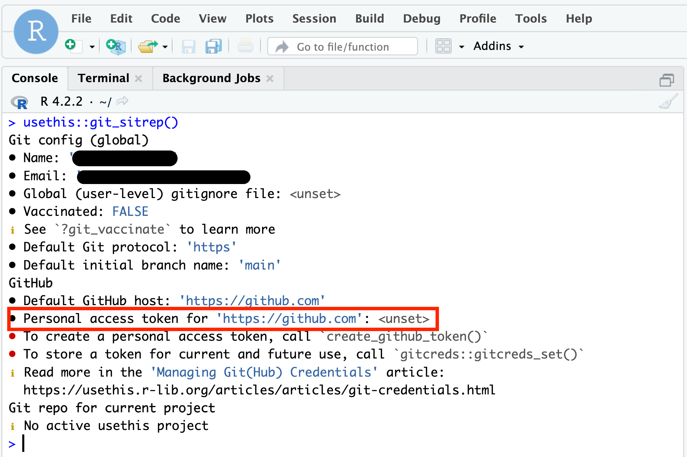
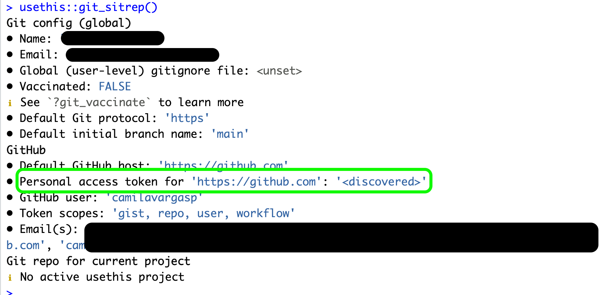

17 Configuring Two-factor Authentication on GitHub
Learning Objectives
Successfully setup two-factor authentication on GitHub
Recognize two-factor authentication jargon
17.1 Why Set up Two-factor Authentication (2FA)
Prevents unauthorized access
Strengthens your web security, especially if you have a compromised password
It is an increasing requirement for most websites and online applications or services
In March 2023, GitHub announced that it will require 2FA for “all developers who contribute code on GitHub.com” (GitHub Blog). This rollout will be completed by the end of 2023.
All users have the flexibility to use their preferred 2FA method, including: TOTP, SMS, security keys, or GitHub Mobile app. GitHub strongly recommends using security keys and TOTPs. While SMS-based 2FA is available to use, it does not provide the same level of protection, and is no longer recommended under NIST (National Institute of Standards and Technology) 800-63B.
17.1.1 Additional information about 2FA on GitHub:
Navigate to your account Settings (click your profile photo in the top right-hand corner)
In the “Access” section, click “Password and Authenticate”
In the “Two-factor authentication” section, click Enable two-factor authentication
Under “Setup authenticator app”, either:
Scan the QR code with your TOTP app. After scanning, the app displays a six-digit code that you can enter on GitHub
If you can’t scan the QR code, click “enter this text code” to see a code that you can manually enter in your TOTP app instead
On GitHub, type the code into the field under “Verify the code from the app”
Under “Save your recovery codes”, click “Download” to download your recovery codes. Save them to a secure location because your recovery codes can help you get back into your account if you lose access.
After saving your two-factor recovery codes, click “I have saved my recovery codes” to enable two-factor authentication for your account
Configure additional 2FA methods, if desired
17.3 Glossary
Term
Definition
Quick Response (QR) Code
A type of two-dimensional matrix barcode that contains specific information
Recovery Code
A unique code(s) used to reset passwords or regain access to accounts
Short Message Service (SMS)
A text messaging service that allows mobile devices to exchange short text messages
Time-based one-time password (TOTP)
A string of unique codes that changes based on time. Often, these appear as six-digit numbers that regenerate every 30 seconds
Two-factor Authentication (2FA)
An identity and access management security method that requires two forms of identification to access accounts, resources, or data
18 Check and Set your GitHub Personal Access Token (PAT)
18.1 Steps to check if your Personal Access Token is valid
If your Personal Access Token is , you have to go ahead and reset it following the instructions on how to Set (or reset) your PAT.

Set (or reset) your PAT
Setting up your PAT
Run usethis::create_github_token() in the Console.
A new browser window should open up to GitHub, showing all the scopes options. You can review the scopes, but you don’t need to worry about which ones to select this time. Using create_github_token() automatically pre-selects some recommended scopes. Go ahead and scroll to the bottom and click “Generate Token”.
Copy the generated token.
Back in RStudio, run gitcreds::gitcreds_set() in the Console.
Paste your PAT when the prompt asks for it.
Last thing, run usethis::git_sitrep() in the Console to check your Git configuration and that you’ve successful stored your PAT.
Check your PAT is .
In the console run usethis::git_sitrep()
Expect to see this result:

19 Regular Expressions
19.1 Introduction
Regular expressions are a fantastic tool for filtering and even extracting information out of strings of characters such as site codes, titles, or even entire documents. Regular expressions follow a custom syntax that we’ll need to learn but they are worth learning because:
Regular expressions can do things other methods cannot
Regular expressions can be used with many other languages and tools so it’s a learn-once, use-everywhere kind of tool
But they’re something that you only need to learn a bit of to get a lot of value out of them. I often use fairly simple regular expressions, like the ones we used on the command line,
ls*.qmd
19.2 Learning Outcomes
Students should:
Understand when regular expressions are appropriate
Have an introductory-level awareness of regular expression syntax
Have some experience executing and working with regular expressions in R
19.3 Lesson
Earlier this week, we used some simple regular expression on the command line (terminal). The same type of operations we used on the command line work in R:
Let’s start off with a simple example of where simpler methods won’t work and see how regular expressions can be used to get what we need done. Let’s say we just received some data we need to analyze and we find this:
It looks like the author of the dataset mixed the year of measurements, site code (e.g., A, CCCC, etc.), and some sub-site code (e.g., 1, 2, 3, etc.) into a single column. If we wanted to, for example, calculate mean temperature by site, we’d need to split these up somehow into separate columns. How could we go about this? We could start with substr which lets us slice a string by its indices:
But we’d quickly find that, because the number of characters in the site code varies from one to four, we can’t extract just the site code. These are the types of problems where regular expressions come in handy.
Before we start, we’re going to use the str_view_all function from the stringr package which shows a nice display of the result of executing a regular expression against our strings. In real use, we would use another function to actually get and work with the result.
The expression we used above, [a-z ]+, is equivalent to asking for the first consecutive run of the letters a-z or ” ” (a space) in the entire string of characters. This is the type of problem regular expression were created for!
19.4 Overview of Regular Expressions
Regular expressions can match things literally, e.g.,
str_detect("grouper", "striper")
[1] FALSE
str_detect("grouper", "grouper")
[1] TRUE
but they also support a large set of special characters:
.: Match any character
fish <-c("grouper", "striper", "sheepshead")str_view_all(fish, ".p")
Note that the lower case version \\s selects any whitespace characters, whereas the uppercase version \\S selects all non-whitespace characters. The next pattern is analogous for digits:
\d & \D: Match any digit, equivalent to [0-9]
fish <-c("striper1", "red drum2", "tarpon123")str_view_all(fish, "\\d")
[1] │ striper<1>
[2] │ red drum<2>
[3] │ tarpon<1><2><3>
\w & \W: Match any word character, equivalent to [A-Za-z0-9_]
fish <-c("striper1", "red drum2", "tarpon123")str_view_all(fish, "\\w")
# Regular expressions are greedyletters <-"abcdefghijkc"str_view_all(letters, "a.*c") # Greedy
[1] │ <abcdefghijkc>
str_view_all(letters, "a.*?c") # Lazy
[1] │ <abc>defghijkc
(): Grouping
One of the most powerful parts of regular expressions is grouping. Grouping allows us to split up our matched expressions and do more work with them. For example, we can create match the city and state in a set of addresses, splitting it into components:
addresses <-c("Santa Barbara, CA", "Seattle, WA", "New York, NY")str_view_all(addresses, "([\\w\\s]+), (\\w+)")
Once we use groups, (), we can also use back references to work with the result. Back references are \ and a number, where \1 is the first thing in (), \2 is the second thing in (), and so on.
[1] "City: Santa Barbara, State: CA" "City: Seattle, State: WA"
[3] "City: New York, State: NY"
^ & $
It can also be really useful to make a say something like “strings that start with a capital letter” or “strings that end with a period”:
possible_sentences <-c("This might be a sentence.","So. Might. this","but this could maybe not be?","Am I a sentence?","maybe not","Regular expressions are useful!")# ^ specifies the start so ^[A-z] means "starts with a capital letter""str_detect(possible_sentences, "^[A-Z]")
[1] "This might be a sentence." "Am I a sentence?"
[3] "Regular expressions are useful!"
19.5 Finish out our example together
Now that we’ve gone over some basics of regular expressions, let’s finish our example by splitting the various components of column x into a year, site, and sub_site column:
# I'll show you how to extract the year partsite_data$year <-str_extract(site_data$x, "\\d{4}")# You do the restsite_data$site <-str_extract(site_data$x, "") # <- Fill this in between the ""site_data$plot <-str_extract(site_data$x, "") # <- Fill this in between the ""
19.6 Common R functions that use regular expressions
Base R
grep
gsub
strsplit
stringr package
string_detect
string_match
string_replace
string_split
19.6.1 Another example
Data often come to us in strange forms and, before we can even begin analyzing the data, we have to do a lot of work to sanitize what we’ve been given. An example, which I just got the other week were temporal data with dates formatted like this:
and so on like that. Do you see how the day of the month and year are represented in different ways through the series? If we want to convert these strings into Date objects for further analysis, we’ll to do some pre-cleaning before we can do that conversion. Regular expressions work great here.
That above regular expression was complex. Let’s break it down into its main parts. Below, I’ve re-formatted the data and the regular expression a bit so we can see what’s going on.